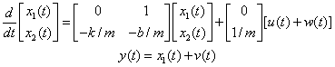
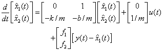
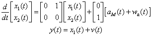
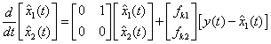
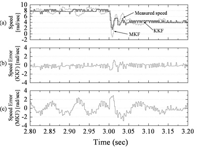
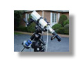
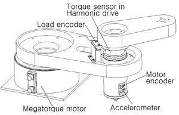
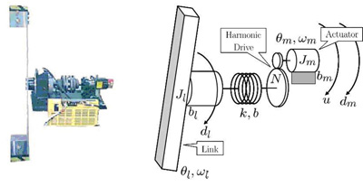

Sensing Rich Design of Drive Trains
Home |
People |
Research |
Publications |
Resources |
Misc
|
|
|
Motion and Torque Control
Overview
Intelligent Control of Robot Manipulators for Performance Enhancement
Sensing Rich Drive Trains for Modern Mechatronic Systems
Iterative Learning Control for Precision Linear Motion
|
|
|

|
|
National Science Foundation Project
Introduction
Technical
Objectives
Example
Equipments
Further Advantages of Sensing Rich Approach
Related Publications
Researchers
|
|
Attention:
This website is based upon work supported by the National Science
Foundation under Award No.0529451. Any opinions, findings, and
conclusions or recommendations expressed in this website are those
of the authors and do not necessarily reflect the views of the
National Science Foundation.
|
|
Introduction
|
|
The design and production of high-performance
machineries and consumer products in a cost effective and timely
manner is one of the ultimate challenges to engineers today. Mechatronics
approach has been recognized to meet such challenges. 
In modern mechatronic systems, the physical system
and the computer (DSP) are interfaced by sensors and actuators.
The sensor signals are utilized for variety of purposes such as
-
real time estimation of parameters such as mass and friction
coefficients,
-
real time identification of dynamics of drive trains, and
-
motion/vibration control.
|
|
|
Technical Objectives
|
|
The technical objectives of the research are:
-
to study sensing of various signals in
the drive train, in particular, those not utilized in conventional
practice such as acceleration signals, force signals in the
drive train and end effector’s position,
-
to develop signal processing and decision
making algorithms including their auto-tuning methodologies
that take advantage of the sensed signals for the betterment
of performance and other mechatonic advantages, and
-
to demonstrate these benefits experimentally.
|
|
|
Example
|
|
Kinematic Kalman Filter (KKF)
—
An example demonstrating
the advantage of sensing rich design.
The Kinematic Kalman Filter (KKF) fuses acceleration
measurement and position measurement of a linear motor driven
positioning table for simple and robust estimation of the velocity.
Consider a single degree of freedom motion system described by

where x is the position, u is the force input.
When the position is measured, the velocity may be estimated by
a model based Kalman Filter (MBKF) or state observer. Defining
two state variables by x1 = x and x2
= dx/dt, the system and the Kalman filter are obtained in the
following form:
System
Model for MBKF
Consider a single degree of freedom motion system described by

where w(t) and v(t) are input noise and measurement
noise, respectively. w(t) and v(t) are independent Gaussian white
noise processes.
Model
Based Kalman Filter (MBKF)

where f 1 and f 2
are the filter gains.
The MBKF depends on the plant parameters. Thus, if the plant parameters
are poorly known or subject to change, its performance deteriorates.
If the position and acceleration are both measured, the system
equation and the KKF are obtained in the following form:
System
Model for KKF

where w(t) and v(t) are accelerometer measurement
noise and position measurement noise, respectively.
Kinematic
Kalman Filter (KKF)

where f k1 and f k2
are the filter gains.
KKF does not depend on model parameters at all. Thus, if the acceleration
and the position are both measured, the velocity may be reliably
estimated by KKF.
The figure below show that the KKF provides an accurate estimate
of the velocity even when the resolution of an encoder is low.

Estimation of Speed by MBKF and KKF
Encoder resolution = 256 pulse per revolution
|
|
|

Equipments
|
|
 - Two Inertia System with Harmonic Gear
 |
|
|
|
Further Advantages
|
|
-
If an encoder and an accelerometer are
installed on the motor side as well as on the load side, the
velocity on both end can be accurately estimated by KKFs.
-
State feedback control may be easily implemented.
LQ tuning of state feedback gain provides excellent robustness
properties.
-
If all state variables are known, parameter
identification and adaptive control may be easily implemented.
-
Additional sensors such as force sensors
may be added for reliable fault detection and effective failure
management.
|
|
|
|

Related Publications
|
|
-
Lee H-S., Tomizuka, M., "Robust Motion
Controller Design for High-Accuracy Positioning Systems,"
IEEE Transactions on Industrial Electronics, Vol. 43, No.
1, pp. 48-55, 1996.
-
Ishikawa, J. and Tomizuka, M. "Pivot
Friction Compensation Using an Accelerometer and a Disturbance
Observer for Hard Disk Drives," IEEE/ASME Transactions
on Mechatronics, Vol. 3, No. 3, pp. 194-201, September 1998.
-
Lee D-J., Tomizuka, M., "State/Parameter/ Disturbance
Estimation with an Accelerometer in Precision Motion Control
of a Linear Motor," Proceedings of 2001 ASME International Mechanical Engineering Congress and Exposition, IMECE2001/DSC-24578, 2001
Abstract |
HTML |
PDF
-
Soo Jeon and Masayoshi Tomizuka, "Benefits of Acceleration Measurement in Velocity Estimation and Motion Control," accepted for publication in Control Engineering Practice.
Abstract |
HTML |
PDF
|
|

Researchers
|
|
Haifei Cheng
homepage | e-mail |
Hyun-Sug Kim
homepage
|
e-mail |
|
|
|